poisson mean via penalized form
Dongyue Xie
2022-05-16
Last updated: 2022-09-26
Checks: 7 0
Knit directory: gsmash/
This reproducible R Markdown analysis was created with workflowr (version 1.7.0). The Checks tab describes the reproducibility checks that were applied when the results were created. The Past versions tab lists the development history.
Great! Since the R Markdown file has been committed to the Git repository, you know the exact version of the code that produced these results.
Great job! The global environment was empty. Objects defined in the global environment can affect the analysis in your R Markdown file in unknown ways. For reproduciblity it’s best to always run the code in an empty environment.
The command set.seed(20220606) was run prior to running
the code in the R Markdown file. Setting a seed ensures that any results
that rely on randomness, e.g. subsampling or permutations, are
reproducible.
Great job! Recording the operating system, R version, and package versions is critical for reproducibility.
Nice! There were no cached chunks for this analysis, so you can be confident that you successfully produced the results during this run.
Great job! Using relative paths to the files within your workflowr project makes it easier to run your code on other machines.
Great! You are using Git for version control. Tracking code development and connecting the code version to the results is critical for reproducibility.
The results in this page were generated with repository version afbcd7b. See the Past versions tab to see a history of the changes made to the R Markdown and HTML files.
Note that you need to be careful to ensure that all relevant files for
the analysis have been committed to Git prior to generating the results
(you can use wflow_publish or
wflow_git_commit). workflowr only checks the R Markdown
file, but you know if there are other scripts or data files that it
depends on. Below is the status of the Git repository when the results
were generated:
Ignored files:
Ignored: .Rhistory
Ignored: .Rproj.user/
Untracked files:
Untracked: analysis/neg_binom_mean_lower_bound.Rmd
Untracked: analysis/neg_binom_mean_polya_gamma.Rmd
Untracked: code/poisson_mean/neg_binom_mean_lower_bound.R
Untracked: code/poisson_mean/neg_binom_mean_polya_gamma.R
Untracked: code/poisson_mean/pois_mean_GG.R
Untracked: code/poisson_mean/pois_mean_GG_opt.R
Untracked: code/poisson_mean/pois_mean_GMG.R
Untracked: code/poisson_mean/pois_mean_GMGM.R
Untracked: code/poisson_mean/test_example.R
Untracked: code/poisson_smooth/
Unstaged changes:
Modified: code/poisson_mean/pois_mean_penalized.R
Note that any generated files, e.g. HTML, png, CSS, etc., are not included in this status report because it is ok for generated content to have uncommitted changes.
These are the previous versions of the repository in which changes were
made to the R Markdown (analysis/pois_mean_penalized.Rmd)
and HTML (docs/pois_mean_penalized.html) files. If you’ve
configured a remote Git repository (see ?wflow_git_remote),
click on the hyperlinks in the table below to view the files as they
were in that past version.
| File | Version | Author | Date | Message |
|---|---|---|---|---|
| Rmd | afbcd7b | Dongyue Xie | 2022-09-26 | wflow_publish("analysis/pois_mean_penalized.Rmd") |
| html | 3e8e7d2 | Dongyue Xie | 2022-09-26 | Build site. |
| Rmd | f15734b | Dongyue Xie | 2022-09-26 | wflow_publish("analysis/pois_mean_penalized.Rmd") |
Introduction
source("code/poisson_mean/pois_mean_penalized.R")We solve the following Poisson mean problem by optimization method, \[x_i\sim Poisson(\exp\mu_i),\mu_i\sim g(\cdot)\]
We first generate data and fit poisson ash with log link.
library(ashr)
set.seed(12345)
w = c(0.8,0.2)
n = 100
mu = c(rnorm(n*w[1],0,0.01),rnorm(n*w[2],0,2))
x = rpois(n,exp(mu))
fit.ash = ash(x,1,lik=lik_pois(x,link='log'),mode=0)
fit.ash$fitted_g$pi
[1] 0.63235722 0.00000000 0.00000000 0.00000000 0.00000000 0.00000000
[7] 0.00000000 0.00000000 0.00000000 0.00000000 0.00000000 0.00000000
[13] 0.00000000 0.12675581 0.13923979 0.00000000 0.02269363 0.00000000
[19] 0.00000000 0.00000000 0.02662634 0.00000000 0.00000000 0.05232721
[25] 0.00000000
$a
[1] 0.00000000 -0.08044647 -0.11376848 -0.16089293 -0.22753697
[6] -0.32178586 -0.45507393 -0.64357173 -0.91014787 -1.28714346
[11] -1.82029573 -2.57428692 -3.64059147 -5.14857383 -7.28118294
[16] -10.29714766 -14.56236588 -20.59429533 -29.12473176 -41.18859065
[21] -58.24946352 -82.37718131 -116.49892703 -164.75436261 -232.99785407
$b
[1] 0.00000000 0.08044647 0.11376848 0.16089293 0.22753697
[6] 0.32178586 0.45507393 0.64357173 0.91014787 1.28714346
[11] 1.82029573 2.57428692 3.64059147 5.14857383 7.28118294
[16] 10.29714766 14.56236588 20.59429533 29.12473176 41.18859065
[21] 58.24946352 82.37718131 116.49892703 164.75436261 232.99785407
attr(,"class")
[1] "unimix"
attr(,"row.names")
[1] 1 2 3 4 5 6 7 8 9 10 11 12 13 14 15 16 17 18 19 20 21 22 23 24 25plot(x,col='grey50',main='ash fit',ylim=c(0,150))
lines(fit.ash$result$PosteriorMean,col=4)
legend('topleft',c('data','ash posterior mean'), pch=c(1,NA),lty=c(NA,1),col=c('grey50',4))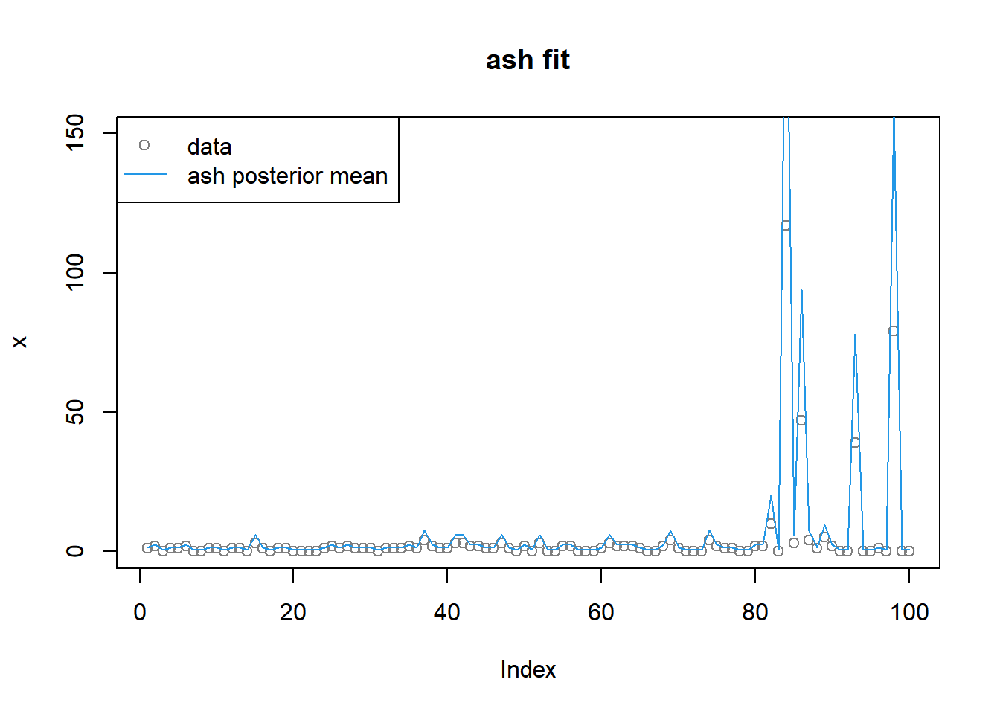
plot(mu,col='grey50',main='ash fit',ylim=c(-2,6))
lines(log(fit.ash$result$PosteriorMean))
legend('topleft',c('true mu','log(ash posterior mean)'), pch=c(1,NA),lty=c(NA,1),col=c('grey50',4))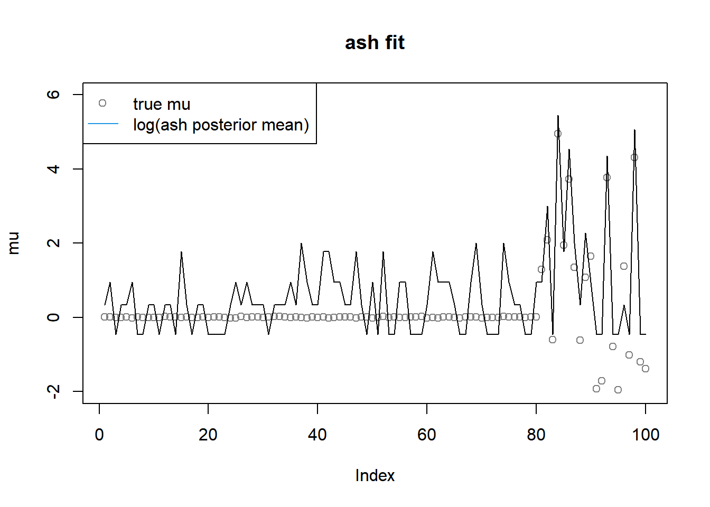
known prior
Now we fit the penalize poisson mean problem with known prior.
Use Nelder-Mead:
grid=c(0.01,2)
fit = pois_mean_penalized_optim(x,w=w,grid=grid,est_w=FALSE,z_init = log(1+x),opt_method = 'Nelder-Mead')
plot(L_grad_known_g(fit$fit$par,x,w,grid),ylab='gradient',main='check gradient')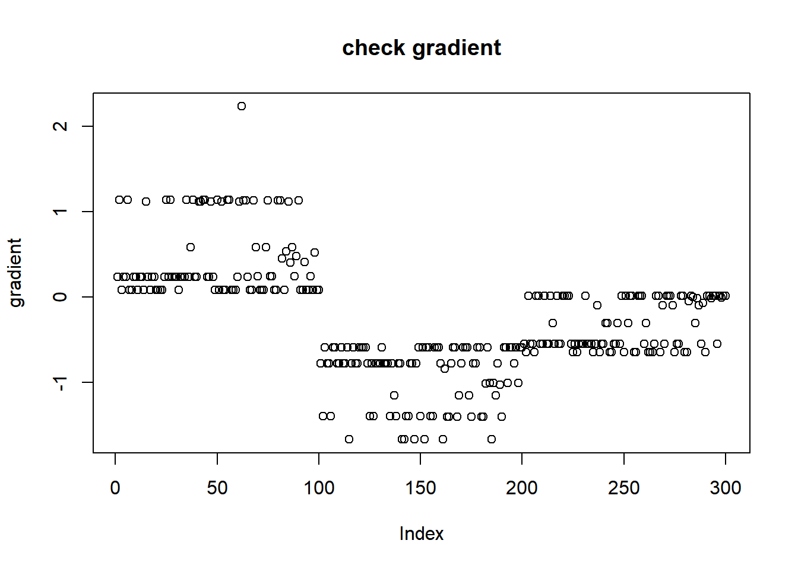
plot(fit$z,col='grey50')
lines(log(1+x),type='p',pch=8,col='grey50')
lines(mu,col='grey80',type='p',pch=20)
lines(fit$m,col=4)
legend('topleft',c('log(1+x)','z','true mu','mu hat'), pch=c(8,1,20,NA),lty=c(NA,NA,NA,1),col=c('grey50','grey50','grey80',4))
fit$s2 [1] 0.503943270 0.335962180 1.007886541 0.503943270 0.503943270 0.335962180
[7] 1.007886541 1.007886541 0.503943270 0.503943270 1.007886541 0.503943270
[13] 0.503943270 1.007886541 0.251971635 0.503943270 1.007886541 0.503943270
[19] 0.503943270 1.007886541 1.007886541 1.007886541 1.007886541 0.503943270
[25] 0.335962180 0.503943270 0.335962180 0.503943270 0.503943270 0.503943270
[31] 1.007886541 0.503943270 0.503943270 0.503943270 0.335962180 0.503943270
[37] 0.201577308 0.335962180 0.503943270 0.503943270 0.251971635 0.251971635
[43] 0.335962180 0.335962180 0.503943270 0.503943270 0.251971635 0.503943270
[49] 1.007886541 0.335962180 1.007886541 0.251971635 1.007886541 1.007886541
[55] 0.335962180 0.335962180 1.007886541 1.007886541 1.007886541 0.503943270
[61] 0.251971635 0.335962180 0.335962180 0.335962180 0.503943270 1.007886541
[67] 1.007886541 0.335962180 0.201577308 0.503943270 1.007886541 1.007886541
[73] 1.007886541 0.201577308 0.335962180 0.503943270 0.503943270 1.007886541
[79] 1.007886541 0.335962180 0.335962180 0.091626049 1.007886541 0.008541411
[85] 0.251971635 0.020997636 0.201577308 0.503943270 0.167981090 0.335962180
[91] 1.007886541 1.007886541 0.025197164 1.007886541 1.007886541 0.503943270
[97] 1.007886541 0.012598582 1.007886541 1.007886541L_known_g(fit$fit$par,x,w,grid)[1] -688.6274Use BFGS:
fit = pois_mean_penalized_optim(x,w=w,grid=grid,est_w=FALSE,z_init = log(1+x),opt_method = 'BFGS')
plot(L_grad_known_g(fit$fit$par,x,w,grid),ylab='gradient',main='check gradient')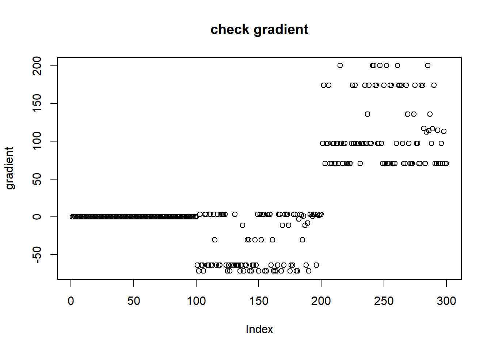
plot(fit$z,col='grey50')
lines(log(1+x),type='p',pch=8,col='grey50')
lines(mu,col='grey80',type='p',pch=20)
lines(fit$m,col=4)
legend('topleft',c('log(1+x)','z','true mu','mu hat'), pch=c(8,1,20,NA),lty=c(NA,NA,NA,1),col=c('grey50','grey50','grey80',4))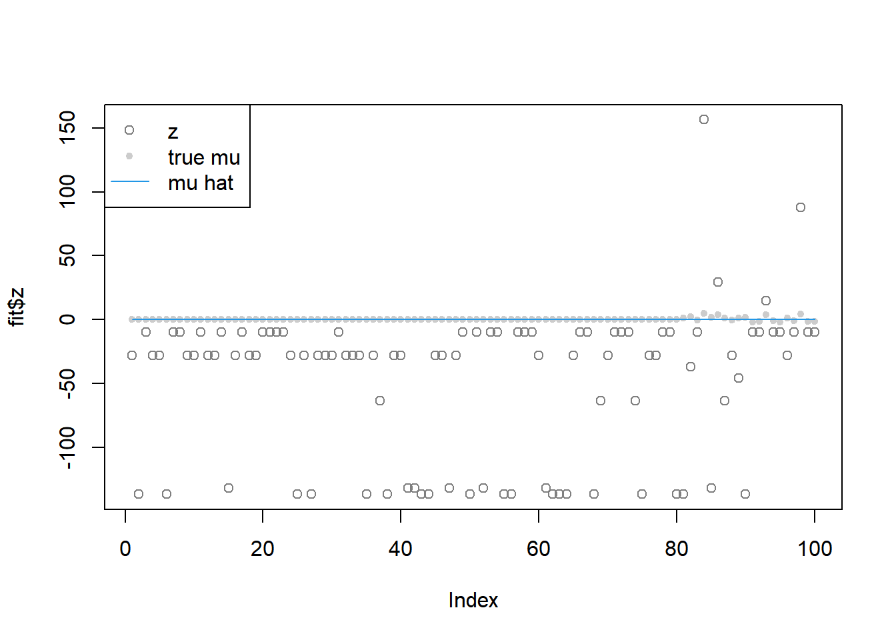
fit$s2 [1] 1.563562e+42 3.787427e+75 4.879849e+30 1.563562e+42 1.563562e+42
[6] 3.787427e+75 4.879849e+30 4.879849e+30 1.563562e+42 1.563562e+42
[11] 4.879849e+30 1.563562e+42 1.563562e+42 4.879849e+30 8.588190e+86
[16] 1.563562e+42 4.879849e+30 1.563562e+42 1.563562e+42 4.879849e+30
[21] 4.879849e+30 4.879849e+30 4.879849e+30 1.563562e+42 3.787427e+75
[26] 1.563562e+42 3.787427e+75 1.563562e+42 1.563562e+42 1.563562e+42
[31] 4.879849e+30 1.563562e+42 1.563562e+42 1.563562e+42 3.787427e+75
[36] 1.563562e+42 1.008232e+59 3.787427e+75 1.563562e+42 1.563562e+42
[41] 8.588190e+86 8.588190e+86 3.787427e+75 3.787427e+75 1.563562e+42
[46] 1.563562e+42 8.588190e+86 1.563562e+42 4.879849e+30 3.787427e+75
[51] 4.879849e+30 8.588190e+86 4.879849e+30 4.879849e+30 3.787427e+75
[56] 3.787427e+75 4.879849e+30 4.879849e+30 4.879849e+30 1.563562e+42
[61] 8.588190e+86 3.787427e+75 3.787427e+75 3.787427e+75 1.563562e+42
[66] 4.879849e+30 4.879849e+30 3.787427e+75 1.008232e+59 1.563562e+42
[71] 4.879849e+30 4.879849e+30 4.879849e+30 1.008232e+59 3.787427e+75
[76] 1.563562e+42 1.563562e+42 4.879849e+30 4.879849e+30 3.787427e+75
[81] 3.787427e+75 6.174722e+50 4.879849e+30 5.189492e+48 8.588190e+86
[86] 4.763309e+49 1.008232e+59 1.563562e+42 4.250852e+50 3.787427e+75
[91] 4.879849e+30 4.879849e+30 7.775782e+49 4.879849e+30 4.879849e+30
[96] 1.563562e+42 4.879849e+30 1.306805e+49 4.879849e+30 4.879849e+30L_known_g(fit$fit$par,x,w,grid)[1] -471183.7Use CG:
fit = pois_mean_penalized_optim(x,w=w,grid=grid,est_w=FALSE,z_init = log(1+x),opt_method = 'CG')
plot(L_grad_known_g(fit$fit$par,x,w,grid),ylab='gradient',main='check gradient')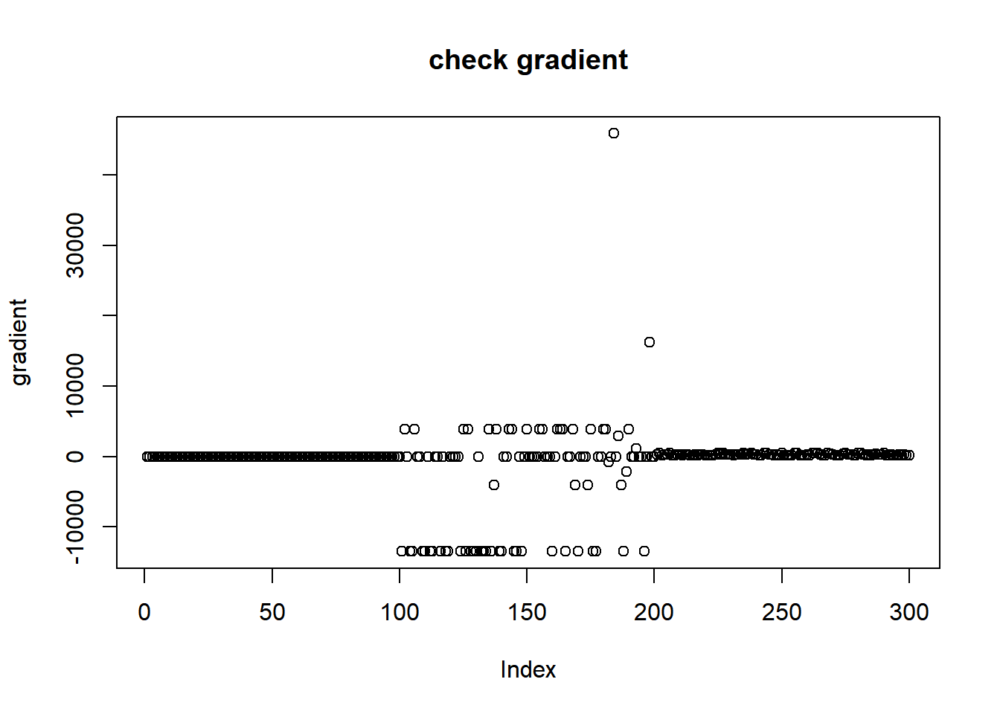
plot(fit$z,col='grey50')
lines(log(1+x),type='p',pch=8,col='grey50')
lines(mu,col='grey80',type='p',pch=20)
lines(fit$m,col=4)
legend('topleft',c('log(1+x)','z','true mu','mu hat'), pch=c(8,1,20,NA),lty=c(NA,NA,NA,1),col=c('grey50','grey50','grey80',4))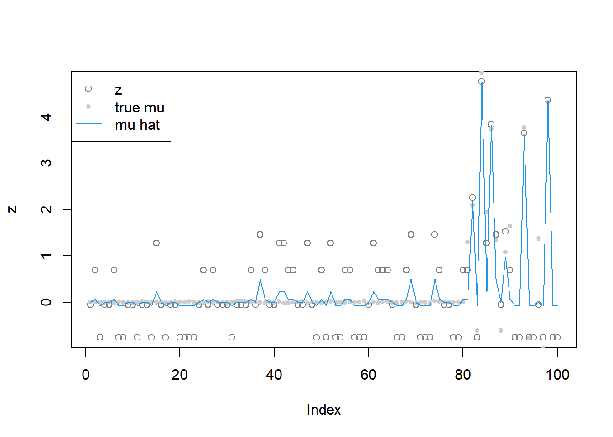
fit$s2 [1] 1.335038e+125 4.357316e+214 5.025312e+85 1.335038e+125 1.335038e+125
[6] 4.357316e+214 5.025312e+85 5.025312e+85 1.335038e+125 1.335038e+125
[11] 5.025312e+85 1.335038e+125 1.335038e+125 5.025312e+85 2.279027e+245
[16] 1.335038e+125 5.025312e+85 1.335038e+125 1.335038e+125 5.025312e+85
[21] 5.025312e+85 5.025312e+85 5.025312e+85 1.335038e+125 4.357316e+214
[26] 1.335038e+125 4.357316e+214 1.335038e+125 1.335038e+125 1.335038e+125
[31] 5.025312e+85 1.335038e+125 1.335038e+125 1.335038e+125 4.357316e+214
[36] 1.335038e+125 5.869611e+167 4.357316e+214 1.335038e+125 1.335038e+125
[41] 2.279027e+245 2.279027e+245 4.357316e+214 4.357316e+214 1.335038e+125
[46] 1.335038e+125 2.279027e+245 1.335038e+125 5.025312e+85 4.357316e+214
[51] 5.025312e+85 2.279027e+245 5.025312e+85 5.025312e+85 4.357316e+214
[56] 4.357316e+214 5.025312e+85 5.025312e+85 5.025312e+85 1.335038e+125
[61] 2.279027e+245 4.357316e+214 4.357316e+214 4.357316e+214 1.335038e+125
[66] 5.025312e+85 5.025312e+85 4.357316e+214 5.869611e+167 1.335038e+125
[71] 5.025312e+85 5.025312e+85 5.025312e+85 5.869611e+167 4.357316e+214
[76] 1.335038e+125 1.335038e+125 5.025312e+85 5.025312e+85 4.357316e+214
[81] 4.357316e+214 1.036774e+144 5.025312e+85 1.571839e+125 2.279027e+245
[86] 5.419367e+140 5.869611e+167 1.335038e+125 3.669941e+143 4.357316e+214
[91] 5.025312e+85 5.025312e+85 5.736992e+141 5.025312e+85 5.025312e+85
[96] 1.335038e+125 5.025312e+85 2.040635e+135 5.025312e+85 5.025312e+85L_known_g(fit$fit$par,x,w,grid)[1] -3254344Use nleqslv for solving gradient = 0 directly.
library(nleqslv)
grid=c(0.01,2)
fit = pois_mean_penalized_nleqslv(x,w=w,grid=grid,est_w=FALSE,z_init = log(1+x),opt_method = 'Broyden')
plot(L_grad_known_g(fit$fit$x,x,w,grid),ylab='gradient',main='check gradient')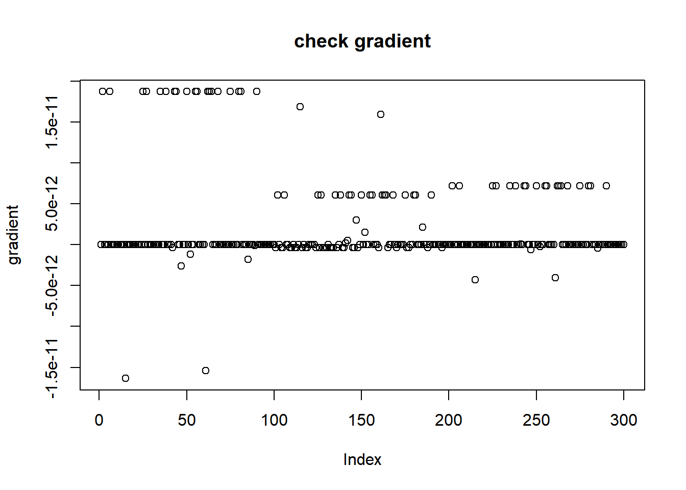
plot(fit$z,col='grey50')
lines(log(1+x),type='p',pch=8,col='grey50')
lines(mu,col='grey80',type='p',pch=20)
lines(fit$m,col=4)
legend('topleft',c('log(1+x)','z','true mu','mu hat'), pch=c(8,1,20,NA),lty=c(NA,NA,NA,1),col=c('grey50','grey50','grey80',4))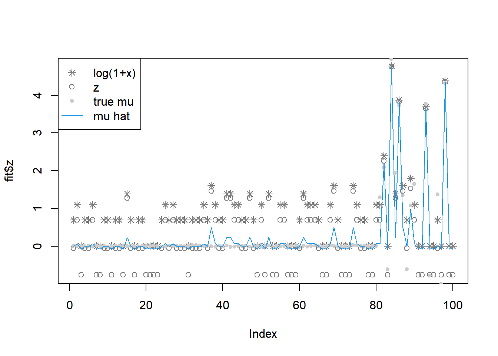
fit$s2 [1] 1.008880159 0.879275042 1.152719331 1.008880159 1.008880159 0.879275042
[7] 1.152719331 1.152719331 1.008880159 1.008880159 1.152719331 1.008880159
[13] 1.008880159 1.152719331 0.667709938 1.008880159 1.152719331 1.008880159
[19] 1.008880159 1.152719331 1.152719331 1.152719331 1.152719331 1.008880159
[25] 0.879275042 1.008880159 0.879275042 1.008880159 1.008880159 1.008880159
[31] 1.152719331 1.008880159 1.008880159 1.008880159 0.879275042 1.008880159
[37] 0.474556224 0.879275042 1.008880159 1.008880159 0.667709938 0.667709938
[43] 0.879275042 0.879275042 1.008880159 1.008880159 0.667709938 1.008880159
[49] 1.152719331 0.879275042 1.152719331 0.667709938 1.152719331 1.152719331
[55] 0.879275042 0.879275042 1.152719331 1.152719331 1.152719331 1.008880159
[61] 0.667709938 0.879275042 0.879275042 0.879275042 1.008880159 1.152719331
[67] 1.152719331 0.879275042 0.474556224 1.008880159 1.152719331 1.152719331
[73] 1.152719331 0.474556224 0.879275042 1.008880159 1.008880159 1.152719331
[79] 1.152719331 0.879275042 0.879275042 0.111429385 1.152719331 0.008671599
[85] 0.667709938 0.021951297 0.474556224 1.008880159 0.307423274 0.879275042
[91] 1.152719331 1.152719331 0.026592590 1.152719331 1.152719331 1.008880159
[97] 1.152719331 0.012916529 1.152719331 1.152719331L_known_g(fit$fit$x,x,w,grid)[1] -733.7425fit = pois_mean_penalized_nleqslv(x,w=w,grid=grid,est_w=FALSE,z_init = log(1+x),opt_method = 'Newton')
plot(L_grad_known_g(fit$fit$x,x,w,grid),ylab='gradient',main='check gradient')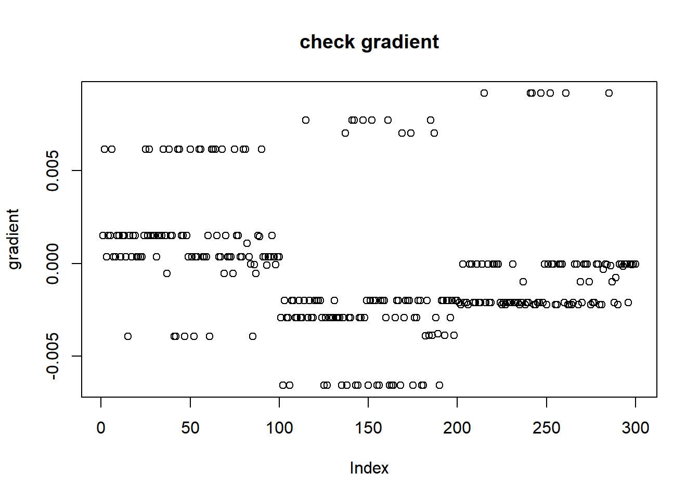
plot(fit$z,col='grey50')
lines(log(1+x),type='p',pch=8,col='grey50')
lines(mu,col='grey80',type='p',pch=20)
lines(fit$m,col=4)
legend('topleft',c('log(1+x)','z','true mu','mu hat'), pch=c(8,1,20,NA),lty=c(NA,NA,NA,1),col=c('grey50','grey50','grey80',4))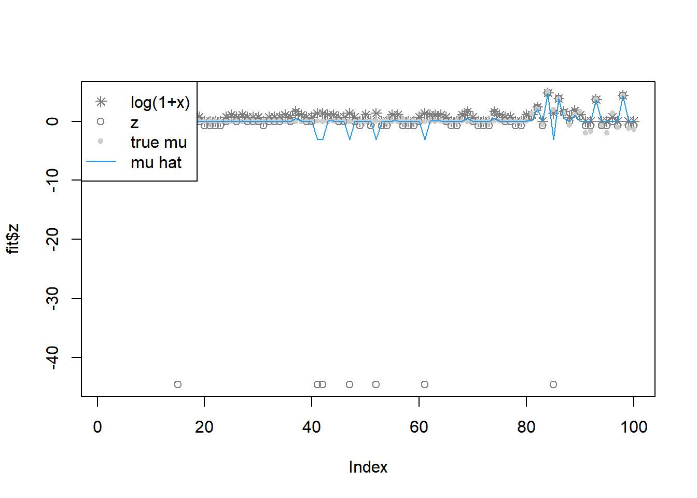
fit$s2 [1] 1.005338369 0.872197937 1.151864543 1.005338369 1.005338369
[6] 0.872197937 1.151864543 1.151864543 1.005338369 1.005338369
[11] 1.151864543 1.005338369 1.005338369 1.151864543 38.218242360
[16] 1.005338369 1.151864543 1.005338369 1.005338369 1.151864543
[21] 1.151864543 1.151864543 1.151864543 1.005338369 0.872197937
[26] 1.005338369 0.872197937 1.005338369 1.005338369 1.005338369
[31] 1.151864543 1.005338369 1.005338369 1.005338369 0.872197937
[36] 1.005338369 0.475474444 0.872197937 1.005338369 1.005338369
[41] 38.218242360 38.218242360 0.872197937 0.872197937 1.005338369
[46] 1.005338369 38.218242360 1.005338369 1.151864543 0.872197937
[51] 1.151864543 38.218242360 1.151864543 1.151864543 0.872197937
[56] 0.872197937 1.151864543 1.151864543 1.151864543 1.005338369
[61] 38.218242360 0.872197937 0.872197937 0.872197937 1.005338369
[66] 1.151864543 1.151864543 0.872197937 0.475474444 1.005338369
[71] 1.151864543 1.151864543 1.151864543 0.475474444 0.872197937
[76] 1.005338369 1.005338369 1.151864543 1.151864543 0.872197937
[81] 0.872197937 0.111334228 1.151864543 0.008670817 38.218242360
[86] 0.021946771 0.475474444 1.005338369 0.306481214 0.872197937
[91] 1.151864543 1.151864543 0.026586098 1.151864543 1.151864543
[96] 1.005338369 1.151864543 0.012914866 1.151864543 1.151864543L_known_g(fit$fit$x,x,w,grid)[1] -645.5743estimating prior
fit.ash = ashr::ash(log(x+0.01),sqrt(exp(-log(x+0.01))),pointmass=F,mixcompdist='normal',prior='uniform')
grid = fit.ash$fitted_g$sd
K = length(grid)opt_method = ‘BFGS’
fit = pois_mean_penalized_optim(x,w=NULL,grid=grid,est_w=TRUE,z_init = log(1+x),opt_method = 'BFGS')round(fit$w,3) [1] 0.000 0.000 0.000 0.000 0.000 0.000 0.000 0.000 0.000 0.000 0.000 0.001
[13] 0.997 0.002 0.000 0.000 0.000 0.000 0.000 0.000 0.000 0.000plot(grid,fit$w)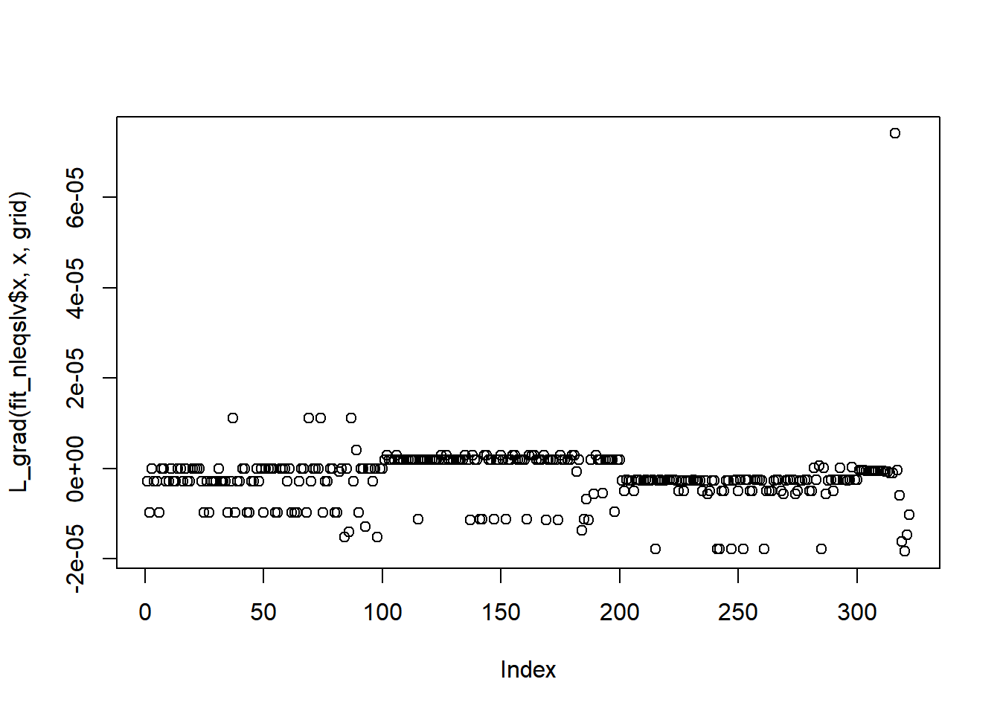
plot(L_grad(fit$fit$par,x,grid),ylab='gradient',main='check gradient')
plot(fit$z,col='grey50')
lines(log(1+x),type='p',pch=8,col='grey50')
lines(mu,col='grey80',type='p',pch=20)
lines(fit$m,col=4)
legend('topleft',c('log(1+x)','z','true mu','mu hat'), pch=c(8,1,20,NA),lty=c(NA,NA,NA,1),col=c('grey50','grey50','grey80',4))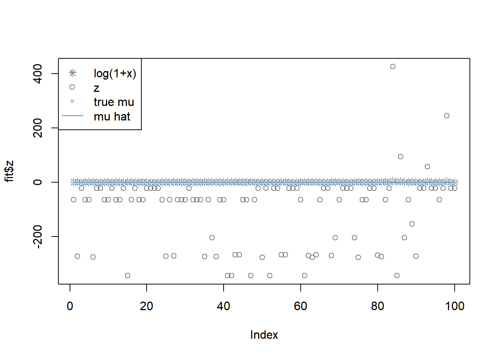
fit$s2 [1] 1.662263e+289 2.651347e+214 1.701144e+72 1.661045e+289 1.662265e+289
[6] 3.621524e+213 1.701144e+72 1.701144e+72 1.662227e+289 1.662234e+289
[11] 1.701144e+72 1.662234e+289 1.661032e+289 1.701144e+72 1.902646e+232
[16] 1.662234e+289 1.701144e+72 1.661032e+289 1.662226e+289 1.701144e+72
[21] 1.701144e+72 1.701144e+72 1.701144e+72 1.660996e+289 3.256023e+214
[26] 1.662257e+289 3.254388e+214 1.662226e+289 1.662227e+289 1.662220e+289
[31] 1.701144e+72 1.662233e+289 1.662253e+289 1.662233e+289 2.653101e+214
[36] 1.662262e+289 5.357096e+238 2.568121e+214 1.662230e+289 1.661932e+289
[41] 1.902646e+232 1.902646e+232 4.773782e+278 4.773723e+278 1.662243e+289
[46] 1.662246e+289 1.902646e+232 1.662219e+289 1.701144e+72 9.934917e+209
[51] 1.701144e+72 1.902646e+232 1.701144e+72 1.701144e+72 4.773723e+278
[56] 4.773723e+278 1.701144e+72 1.701144e+72 1.701144e+72 1.662265e+289
[61] 1.902646e+232 1.892733e+215 1.454471e+188 1.890177e+215 1.661031e+289
[66] 1.701144e+72 1.701144e+72 7.501820e+214 5.357096e+238 1.661040e+289
[71] 1.701144e+72 1.701144e+72 1.701144e+72 5.357096e+238 7.037162e+241
[76] 1.662257e+289 1.661040e+289 1.701144e+72 1.701144e+72 3.413647e+214
[81] 1.465413e+214 2.261519e+123 1.701144e+72 3.589303e+78 1.902646e+232
[86] 1.017289e+84 5.357096e+238 1.662260e+289 4.568985e+216 2.567518e+214
[91] 1.701144e+72 1.701144e+72 5.844931e+85 1.701144e+72 1.701144e+72
[96] 1.662256e+289 1.701144e+72 7.675118e+53 1.701144e+72 1.701144e+72opt_method = ‘Nelder-Mead’
fit = pois_mean_penalized_optim(x,w=NULL,grid=grid,est_w=TRUE,z_init = log(1+x),opt_method = 'Nelder-Mead')round(fit$w,3) [1] 0.047 0.047 0.047 0.047 0.047 0.047 0.047 0.047 0.047 0.047 0.047 0.047
[13] 0.047 0.047 0.047 0.047 0.047 0.047 0.047 0.047 0.047 0.018plot(grid,fit$w)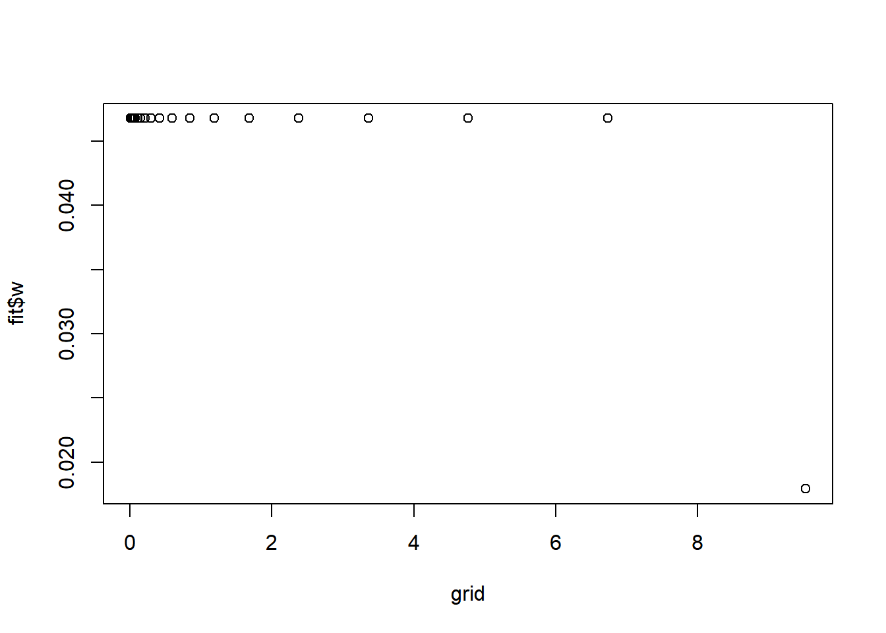
plot(L_grad(fit$fit$par,x,grid),ylab='gradient',main='check gradient')
plot(fit$z,col='grey50')
lines(log(1+x),type='p',pch=8,col='grey50')
lines(mu,col='grey80',type='p',pch=20)
lines(fit$m,col=4)
legend('topleft',c('log(1+x)','z','true mu','mu hat'), pch=c(8,1,20,NA),lty=c(NA,NA,NA,1),col=c('grey50','grey50','grey80',4))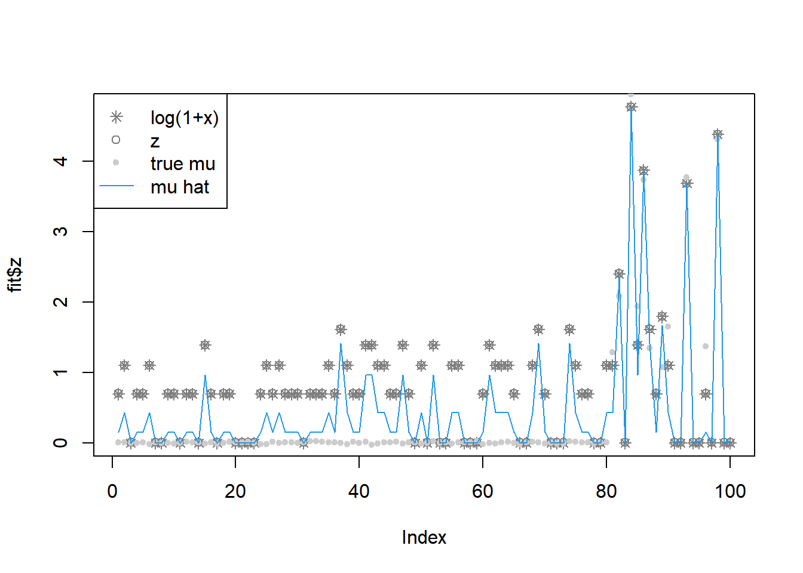
fit$s2 [1] 0.50226581 0.33484387 1.00453162 0.50226581 0.50226581 0.33484387
[7] 1.00453162 1.00453162 0.50226581 0.50226581 1.00453162 0.50226581
[13] 0.50226581 1.00453162 0.25113290 0.50226581 1.00453162 0.50226581
[19] 0.50226581 1.00453162 1.00453162 1.00453162 1.00453162 0.50226581
[25] 0.33484387 0.50226581 0.33484387 0.50226581 0.50226581 0.50226581
[31] 1.00453162 0.50226581 0.50226581 0.50226581 0.33484387 0.50226581
[37] 0.20090632 0.33484387 0.50226581 0.50226581 0.25113290 0.25113290
[43] 0.33484387 0.33484387 0.50226581 0.50226581 0.25113290 0.50226581
[49] 1.00453162 0.33484387 1.00453162 0.25113290 1.00453162 1.00453162
[55] 0.33484387 0.33484387 1.00453162 1.00453162 1.00453162 0.50226581
[61] 0.25113290 0.33484387 0.33484387 0.33484387 0.50226581 1.00453162
[67] 1.00453162 0.33484387 0.20090632 0.50226581 1.00453162 1.00453162
[73] 1.00453162 0.20090632 0.33484387 0.50226581 0.50226581 1.00453162
[79] 1.00453162 0.33484387 0.33484387 0.09132106 1.00453162 0.00851298
[85] 0.25113290 0.02092774 0.20090632 0.50226581 0.16742194 0.33484387
[91] 1.00453162 1.00453162 0.02511329 1.00453162 1.00453162 0.50226581
[97] 1.00453162 0.01255665 1.00453162 1.00453162opt_method = ‘L-BFGS-B’
fit = pois_mean_penalized_optim(x,w=NULL,grid=grid,est_w=TRUE,z_init = log(1+x),opt_method = 'L-BFGS-B')round(fit$w,3) [1] 0.058 0.058 0.058 0.058 0.058 0.058 0.058 0.059 0.061 0.065 0.072 0.086
[13] 0.111 0.112 0.029 0.001 0.000 0.000 0.000 0.000 0.000 0.000plot(grid,fit$w)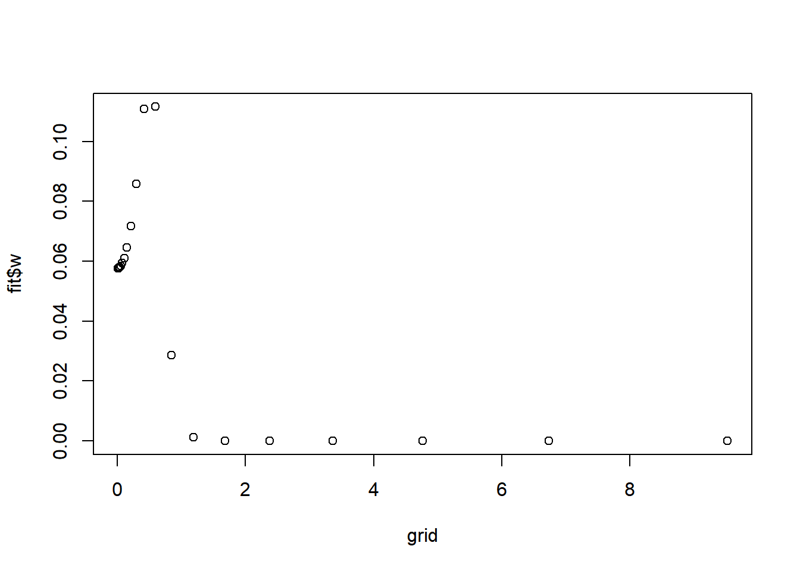
plot(L_grad(fit$fit$par,x,grid),ylab='gradient',main='check gradient')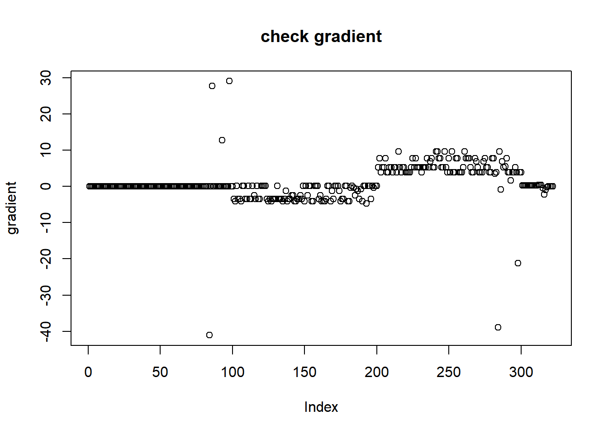
plot(fit$z,col='grey50')
lines(log(1+x),type='p',pch=8,col='grey50')
lines(mu,col='grey80',type='p',pch=20)
lines(fit$m,col=4)
legend('topleft',c('log(1+x)','z','true mu','mu hat'), pch=c(8,1,20,NA),lty=c(NA,NA,NA,1),col=c('grey50','grey50','grey80',4))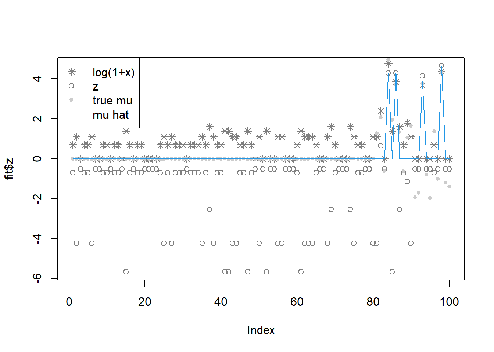
fit$s2 [1] 1.960959e+02 2.464830e+03 5.218593e+01 1.960959e+02 1.960959e+02
[6] 2.464830e+03 5.218593e+01 5.218593e+01 1.960959e+02 1.960959e+02
[11] 5.218593e+01 1.960959e+02 1.960959e+02 5.218593e+01 1.483908e+04
[16] 1.960959e+02 5.218593e+01 1.960959e+02 1.960959e+02 5.218593e+01
[21] 5.218593e+01 5.218593e+01 5.218593e+01 1.960959e+02 2.464830e+03
[26] 1.960959e+02 2.464830e+03 1.960959e+02 1.960959e+02 1.960959e+02
[31] 5.218593e+01 1.960959e+02 1.960959e+02 1.960959e+02 2.464830e+03
[36] 1.960959e+02 1.030434e+03 2.464830e+03 1.960959e+02 1.960959e+02
[41] 1.483908e+04 1.483908e+04 2.464830e+03 2.464830e+03 1.960959e+02
[46] 1.960959e+02 1.483908e+04 1.960959e+02 5.218593e+01 2.464830e+03
[51] 5.218593e+01 1.483908e+04 5.218593e+01 5.218593e+01 2.464830e+03
[56] 2.464830e+03 5.218593e+01 5.218593e+01 5.218593e+01 1.960959e+02
[61] 1.483908e+04 2.464830e+03 2.464830e+03 2.464830e+03 1.960959e+02
[66] 5.218593e+01 5.218593e+01 2.464830e+03 1.030434e+03 1.960959e+02
[71] 5.218593e+01 5.218593e+01 5.218593e+01 1.030434e+03 2.464830e+03
[76] 1.960959e+02 1.960959e+02 5.218593e+01 5.218593e+01 2.464830e+03
[81] 2.464830e+03 3.472784e+01 5.218593e+01 1.634692e-19 1.483908e+04
[86] 6.241046e-03 1.030434e+03 1.960959e+02 2.443946e+02 2.464830e+03
[91] 5.218593e+01 5.218593e+01 1.055648e-01 5.218593e+01 5.218593e+01
[96] 1.960959e+02 5.218593e+01 5.825360e-12 5.218593e+01 5.218593e+01opt_method = ‘CG’
fit = pois_mean_penalized_optim(x,w=NULL,grid=grid,est_w=TRUE,z_init = log(1+x),opt_method = 'CG')round(fit$w,3) [1] 0 0 0 0 0 0 0 0 0 0 0 0 1 0 0 0 0 0 0 0 0 0plot(grid,fit$w)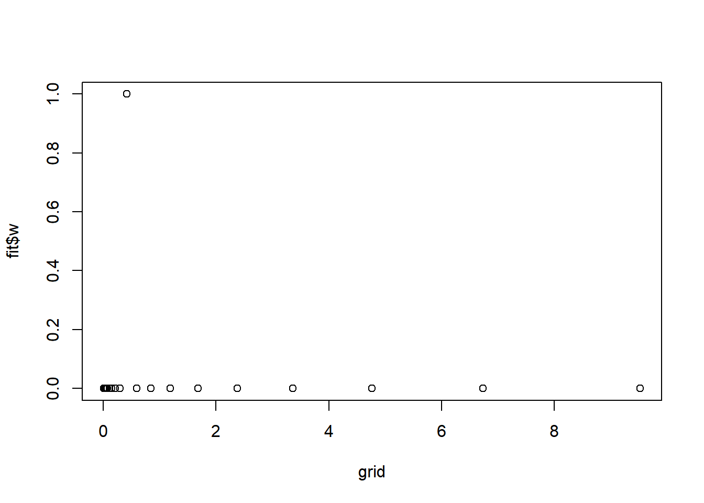
plot(L_grad(fit$fit$par,x,grid),ylab='gradient',main='check gradient')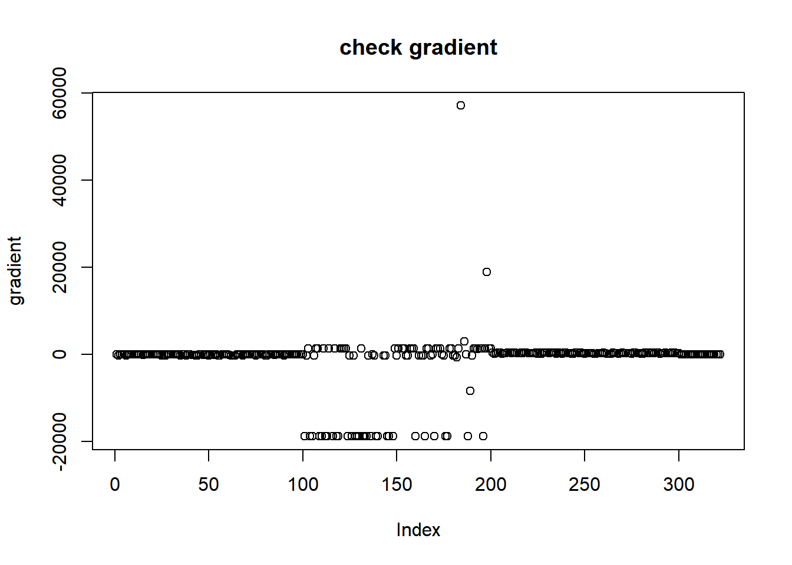
plot(fit$z,col='grey50')
lines(log(1+x),type='p',pch=8,col='grey50')
lines(mu,col='grey80',type='p',pch=20)
lines(fit$m,col=4)
legend('topleft',c('log(1+x)','z','true mu','mu hat'), pch=c(8,1,20,NA),lty=c(NA,NA,NA,1),col=c('grey50','grey50','grey80',4))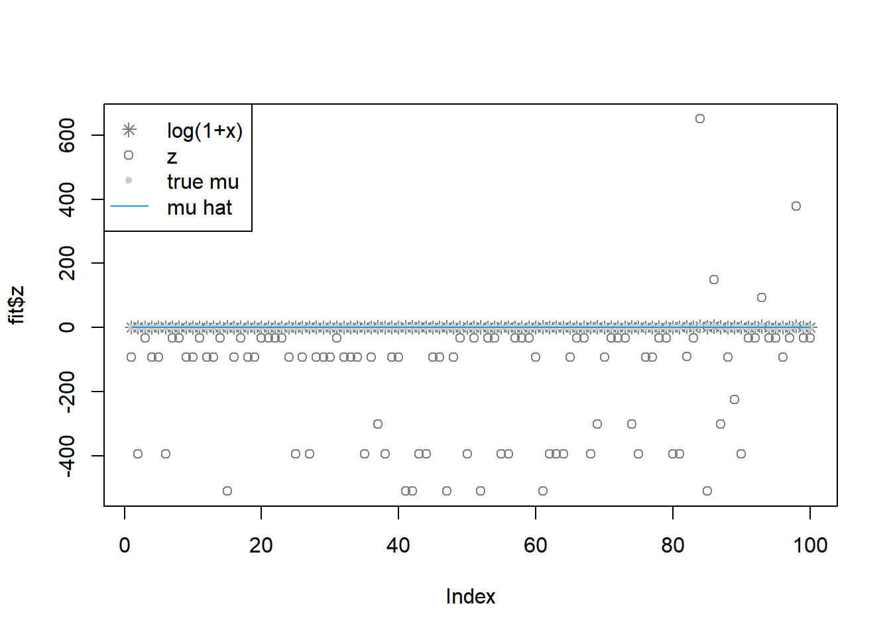
fit$s2 [1] 2.532475e+154 2.330736e+246 2.954520e+106 2.532475e+154 2.532475e+154
[6] 2.330736e+246 2.954520e+106 2.954520e+106 2.532475e+154 2.532475e+154
[11] 2.954520e+106 2.532475e+154 2.532475e+154 2.954520e+106 2.752708e+305
[16] 2.532475e+154 2.954520e+106 2.532475e+154 2.532475e+154 2.954520e+106
[21] 2.954520e+106 2.954520e+106 2.954520e+106 2.532475e+154 2.330736e+246
[26] 2.532475e+154 2.330736e+246 2.532475e+154 2.532475e+154 2.532475e+154
[31] 2.954520e+106 2.532475e+154 2.532475e+154 2.532475e+154 2.330736e+246
[36] 2.532475e+154 1.159014e+229 2.330736e+246 2.532475e+154 2.532475e+154
[41] 2.752708e+305 2.752708e+305 2.330736e+246 2.330736e+246 2.532475e+154
[46] 2.532475e+154 2.752708e+305 2.532475e+154 2.954520e+106 2.330736e+246
[51] 2.954520e+106 2.752708e+305 2.954520e+106 2.954520e+106 2.330736e+246
[56] 2.330736e+246 2.954520e+106 2.954520e+106 2.954520e+106 2.532475e+154
[61] 2.752708e+305 2.330736e+246 2.330736e+246 2.330736e+246 2.532475e+154
[66] 2.954520e+106 2.954520e+106 2.330736e+246 1.159014e+229 2.532475e+154
[71] 2.954520e+106 2.954520e+106 2.954520e+106 1.159014e+229 2.330736e+246
[76] 2.532475e+154 2.532475e+154 2.954520e+106 2.954520e+106 2.330736e+246
[81] 2.330736e+246 5.988746e+155 2.954520e+106 9.356365e+177 2.752708e+305
[86] 1.338887e+177 1.159014e+229 2.532475e+154 2.858358e+190 2.330736e+246
[91] 2.954520e+106 2.954520e+106 6.187887e+176 2.954520e+106 2.954520e+106
[96] 2.532475e+154 2.954520e+106 5.328433e+177 2.954520e+106 2.954520e+106Use nleqslv for solving gradient = 0 directly.
fit = pois_mean_penalized_nleqslv(x,w=NULL,grid=grid,est_w=TRUE,z_init = log(1+x),opt_method = 'Broyden')
plot(L_grad(fit$fit$x,x,grid),ylab='gradient',main='check gradient')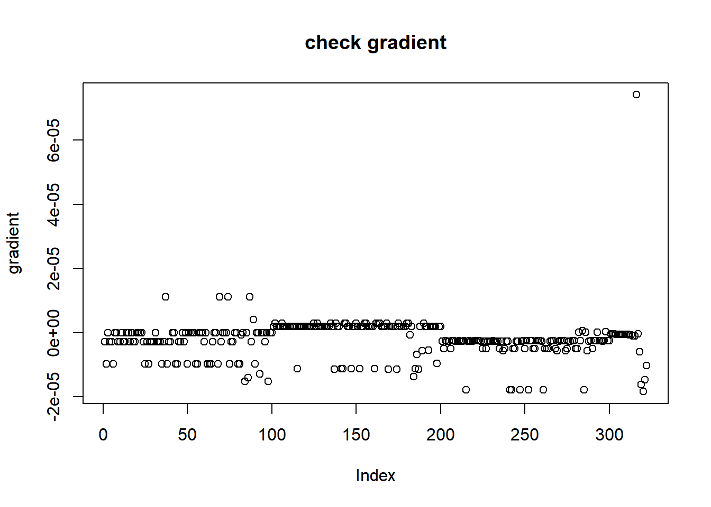
plot(fit$z,col='grey50')
lines(log(1+x),type='p',pch=8,col='grey50')
lines(mu,col='grey80',type='p',pch=20)
lines(fit$m,col=4)
legend('topleft',c('log(1+x)','z','true mu','mu hat'), pch=c(8,1,20,NA),lty=c(NA,NA,NA,1),col=c('grey50','grey50','grey80',4))
round(fit$w,3) [1] 0 0 0 0 0 0 0 0 0 0 0 0 0 0 0 1 0 0 0 0 0 0plot(grid,fit$w)
fit$s2 [1] 1.161368708 0.710919446 1.870311590 1.161368708 1.161368708 0.710919446
[7] 1.870311588 1.870311588 1.161368708 1.161368708 1.870311592 1.161368708
[13] 1.161368708 1.870311588 0.475917124 1.161368708 1.870311588 1.161368708
[19] 1.161368708 1.870311590 1.870311588 1.870311588 1.870311588 1.161368708
[25] 0.710919446 1.161368708 0.710919446 1.161368708 1.161368708 1.161368708
[31] 1.870311590 1.161368708 1.161368708 1.161368708 0.710919446 1.161368708
[37] 0.347687554 0.710919446 1.161368708 1.161368708 0.475917124 0.475917124
[43] 0.710919446 0.710919446 1.161368708 1.161368708 0.475917124 1.161368708
[49] 1.870311589 0.710919446 1.870311589 0.475917124 1.870311589 1.870311589
[55] 0.710919446 0.710919446 1.870311586 1.870311589 1.870311587 1.161368708
[61] 0.475917124 0.710919446 0.710919446 0.710919446 1.161368708 1.870311590
[67] 1.870311587 0.710919446 0.347687553 1.161368708 1.870311588 1.870311592
[73] 1.870311588 0.347687554 0.710919446 1.161368708 1.161368708 1.870311586
[79] 1.870311586 0.710919446 0.710919446 0.122911972 1.870311586 0.008833582
[85] 0.475917124 0.022779652 0.347687554 1.161368708 0.270392653 0.710919446
[91] 1.870311589 1.870311588 0.027743775 1.870311586 1.870311585 1.161368708
[97] 1.870311586 0.013244965 1.870311586 1.870311588fit = pois_mean_penalized_nleqslv(x,w=NULL,grid=grid,est_w=TRUE,z_init = log(1+x),opt_method = 'Newton')
plot(L_grad(fit$fit$x,x,grid),ylab='gradient',main='check gradient')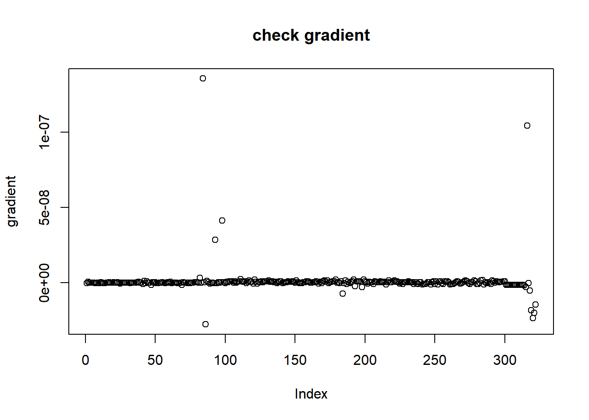
plot(fit$z,col='grey50')
lines(log(1+x),type='p',pch=8,col='grey50')
lines(mu,col='grey80',type='p',pch=20)
lines(fit$m,col=4)
legend('topleft',c('log(1+x)','z','true mu','mu hat'), pch=c(8,1,20,NA),lty=c(NA,NA,NA,1),col=c('grey50','grey50','grey80',4))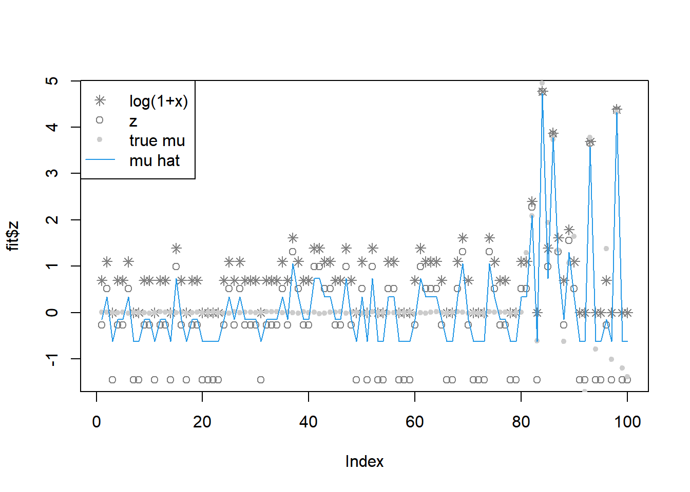
round(fit$w,3) [1] 0 0 0 0 0 0 0 0 0 0 0 0 0 0 0 1 0 0 0 0 0 0plot(grid,fit$w)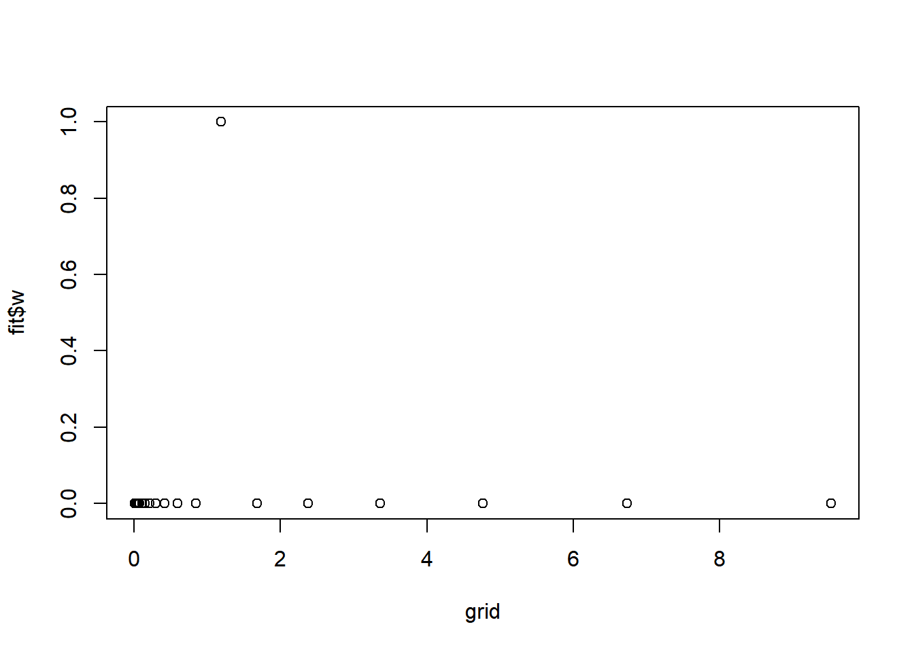
fit$s2 [1] 1.161367355 0.710917648 1.870314513 1.161367354 1.161367354 0.710917648
[7] 1.870314514 1.870314513 1.161367354 1.161367355 1.870314514 1.161367354
[13] 1.161367355 1.870314514 0.475927027 1.161367354 1.870314514 1.161367355
[19] 1.161367354 1.870314512 1.870314515 1.870314513 1.870314512 1.161367354
[25] 0.710917649 1.161367355 0.710917649 1.161367354 1.161367354 1.161367354
[31] 1.870314514 1.161367355 1.161367354 1.161367354 0.710917648 1.161367354
[37] 0.347691536 0.710917648 1.161367355 1.161367354 0.475927027 0.475927027
[43] 0.710917649 0.710917648 1.161367354 1.161367354 0.475927027 1.161367354
[49] 1.870314514 0.710917648 1.870314515 0.475927027 1.870314512 1.870314513
[55] 0.710917648 0.710917648 1.870314514 1.870314513 1.870314513 1.161367354
[61] 0.475927027 0.710917649 0.710917648 0.710917649 1.161367354 1.870314515
[67] 1.870314513 0.710917649 0.347691536 1.161367354 1.870314514 1.870314514
[73] 1.870314515 0.347691536 0.710917649 1.161367354 1.161367354 1.870314514
[79] 1.870314514 0.710917648 0.710917649 0.122911966 1.870314514 0.008833588
[85] 0.475927027 0.022779651 0.347691536 1.161367354 0.270393882 0.710917648
[91] 1.870314514 1.870314516 0.027743770 1.870314515 1.870314512 1.161367354
[97] 1.870314512 0.013244968 1.870314514 1.870314515
sessionInfo()R version 4.2.1 (2022-06-23 ucrt)
Platform: x86_64-w64-mingw32/x64 (64-bit)
Running under: Windows 10 x64 (build 22000)
Matrix products: default
locale:
[1] LC_COLLATE=English_United States.utf8
[2] LC_CTYPE=English_United States.utf8
[3] LC_MONETARY=English_United States.utf8
[4] LC_NUMERIC=C
[5] LC_TIME=English_United States.utf8
attached base packages:
[1] stats graphics grDevices utils datasets methods base
other attached packages:
[1] nleqslv_3.3.3 ashr_2.2-54 workflowr_1.7.0
loaded via a namespace (and not attached):
[1] Rcpp_1.0.9 highr_0.9 compiler_4.2.1 pillar_1.8.1
[5] bslib_0.4.0 later_1.3.0 git2r_0.30.1 jquerylib_0.1.4
[9] tools_4.2.1 getPass_0.2-2 digest_0.6.29 lattice_0.20-45
[13] jsonlite_1.8.0 evaluate_0.16 tibble_3.1.8 lifecycle_1.0.2
[17] pkgconfig_2.0.3 rlang_1.0.5 Matrix_1.4-1 cli_3.3.0
[21] rstudioapi_0.14 yaml_2.3.5 xfun_0.32 fastmap_1.1.0
[25] invgamma_1.1 httr_1.4.4 stringr_1.4.1 knitr_1.40
[29] fs_1.5.2 vctrs_0.4.1 sass_0.4.2 grid_4.2.1
[33] rprojroot_2.0.3 glue_1.6.2 R6_2.5.1 processx_3.7.0
[37] fansi_1.0.3 rmarkdown_2.16 mixsqp_0.3-43 irlba_2.3.5
[41] callr_3.7.2 magrittr_2.0.3 whisker_0.4 ps_1.7.1
[45] promises_1.2.0.1 htmltools_0.5.3 httpuv_1.6.5 utf8_1.2.2
[49] stringi_1.7.8 truncnorm_1.0-8 SQUAREM_2021.1 cachem_1.0.6